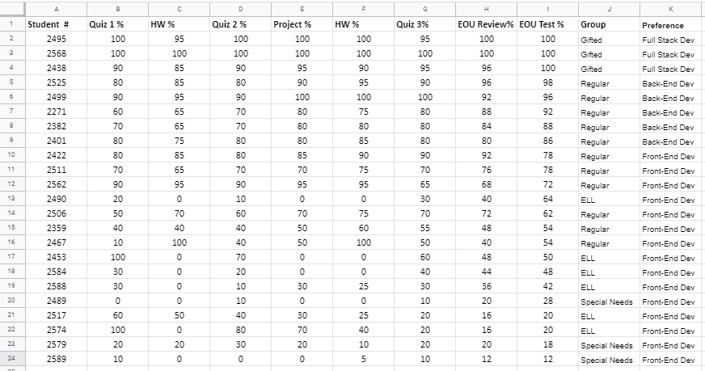

Computer science is a tricky field when it comes to pre-assessments. Very few young people are unfortunately introduced to coding at a young age. While some may bring some experience to the classroom that does not mean they will immediately be able to adapt. Different operating systems, software, and typing ability may prove to be obstacles. I feel I must be prepared to deal with three different types of students, those who are advanced, those who are average, and those who need remedial help.
As I posted in the Discussion forum, I feel I need to do my first class before doing any assessments. While it would be easy to do a poll to collect some data regarding my student's computer skills, I feel the best way to do it is to do my first class and then do the pre-assessment on my second class. My first class will be a crash course into website development. This first class should give them all the basics they need to be able to use a text editor and make simple webpages at the beginner level.
In my second class the students will attempt to build a simple one-page website from scratch. They will put into practice all of the skills they hopefully learned from the first class. The assessment will be Beginner level and every student should have an equal shot at completing it succesfully. ESL and special needs students are the only ones that may get one on one help for this exercise. This assessment will be done in the computer lab and all the code will be uploaded to the Github Classroom repository I setup in advance.
By examining the each student's code and final webpage I will be able to pick out who is good at what and in which areas the student seems to have trouble. The Github classroom allows me to leave feedback right there where the code resides, which is incredibly convenient. Once I examine the code and gather all the data then I will place students in the right category.
It is assumed for this activity that 5 students qualified for the Advanced group, 12 students showed mid-level ability, and 5 students were placed in the Remedial group (4 ESL and 1 Special Needs).
After examining the data from the pre-assessment 5 students were placed in the Remedial group. They were placed in this group for different reasons. The pre-assessment showed that these students were either overwhelmed by the complexity of the text editor, or had trouble styling HTML elements. This group had lots of syntax errors in their code. They also failed to include images properly, a signal that they do not fully comprehend the file system.
My strategy for the Remedial group is to give them as much one on one instruction as possible. I will keep them away from large group projects and focus their skills on the basics for the time being. The Remedial group will not be split from the main class, however, they will have their own assessments that are tailored to their skill level. This group will largely rely on CodePen to submit any assignments as it is very easy for beginners to use. They will also be assigned YouTube tutorials that they must code and submit via CodePen. Members of the Remedial group can be promoted to the Mid-level group upon improvement. Tracking their improvement can be done by examining their CodePens and especially by computer lab exercises which they must complete during class.
12 students were assigned to this group after the pre-assessment. The members of this group were able to complete the task on time and showed that they retained most of what they learned from the initial class. After a review of their code and their final webpage these students showed that they can style HTML elements with only a few syntax errors if any. They also showed that they were comfortable working in a text editor and could create, rename, and delete files as necessary.
The members of this group asked a lot of questions durinig the assessment. This group as a whole excelled at CSS styling but seemed to have trouble with grid layout. They could easily place elements on a webpage, but placing them in the exact spot they wanted proved to be challenging sometimes.
The Mid-level group will submit all assingments via Github repos or Google Forms. They will also work on special group projects with a member of the Advanced group acting as team leader. Members of this group can be promoted to the Advanced group or demoted to the Remedial group if they struggle. As teacher I will keep a spreadsheet that tracks the results of all assessments and also the student's preference for web development, which can be either frontend (interface), backend (database), or full-stack (both) development.
I will place students in this group if after looking at the data I have determined that while they can build a webpage and style it, the student is still asking lots of questions and being slowed down by certain tasks, such as placing elements on a grid or images not loading.
Weekly assessments and a daily CodePen exercise will help me track mastery. The assessments will be a mix of Google Forms quiz, and a coding exercise they must submit to Github.
5 students were identified as being in the advanced category. These students will serve as Team Leaders for all student projects in the class. They will also serve as coaches for those in need of a little help. The Advanced group will be given a lot of freedom to pursue their interests. They will work together on a special project of their choosing and will be assigned advanced YouTube tutorials as assignments.
Members of the Advanced group will submit all assignments via Github repos or Google Forms. Their progress will be assessed on weekly assessments and special projects of their choosing. These assessments will measure their ability to create professional looking webpages with no syntax errors and also their ability to utilize external plugins and libraries. Members of this group can be demoted to Mid-level if they struggle.